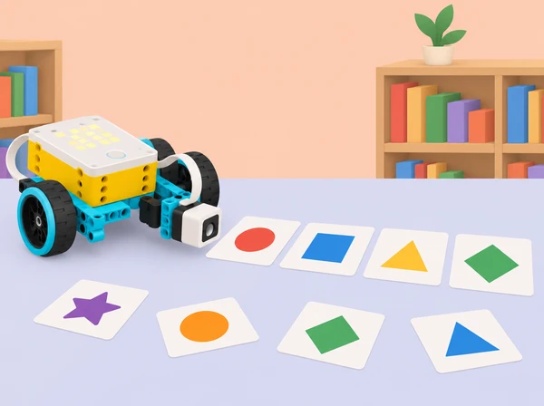

La biblioteca prepara una activitat de microrelats del barri: cada grup crea una seqüència curta a partir de targetes de lloc, objecte i acció, i una maqueta SPIKE ajuda a triar o revelar la pròxima targeta. En Python, les targetes s’organitzen en llistes; el programa consulta posicions, compara una llista d’elements amb una altra i usa una lectura de color per donar una pista d’índex. Cada història és fictícia, acordada i sense dades personals. No usem els textos de l’alumnat com a dades d’entrenament ni els publiquem sense permís.
La situació adapta les sis lliçons de la unitat 10 Lists de LEGO Education Introduction to Python Programming · Course 2: crear i consultar llistes de lletres amb condicions; construir una rutina seqüenciada amb valors del sensor de moviment; comparar dues llistes en un joc de raonament; afegir a una llista dades de proves d’un mecanisme; fer un joc de paraules amb més d’una llista i el sensor de color; i donar/usar feedback. Canviem ioga, salts i jocs de marca per seqüències de moviment de maqueta, mesures mecàniques no corporals i microrelats de llocs imaginaris o coneguts del municipi, mantenint explícits l’ordre, les dades i la comparació.
Llista: seqüència ordenada de valors que es guarda amb un sol nom. Element: una dada dins d’una llista. Índex: posició numèrica d’un element, habitualment des de 0 en Python. Correspondència: relació prevista entre elements de dues llistes. Lectura del sensor: valor que el dispositiu detecta en unes condicions concretes; no és una etiqueta semàntica que Python entenga automàticament.
llocs = ["plaça", "hort", "biblioteca"]
accions = ["saluda", "observa", "comparteix"]
posicio = 1
print(llocs[posicio], accions[posicio])Aquest exemple general associa valors que comparteixen índex; si les llistes no tenen la mateixa llargària, cal tractar-ho abans d’accedir-hi. En SPIKE, la lectura del sensor, els ports i les funcions de llum/so/motor s’han de consultar en la Knowledge Base de la versió local.
Un set SPIKE Prime per equip, hub carregat, app SPIKE amb Python disponible, sensor de color, sensor de força opcional per a una entrada de confirmació, sensor de moviment de l’hub si es prova una seqüència de gir del dispositiu, motor i peces Technic per a un indicador lent opcional, targetes grans de formes/colors, cartó i cinta de paper, regle, diari de programació i ordinador o paper per a codi compartit. La construcció pot ser estàtica: cap activitat depén d’un robot mòbil ni de reproduir instruccions LEGO.
Prepareu paquets de targetes amb símbol, color i paraula impresos amb contrast suficient; un color no reconegut; exemples on les llistes tenen llargàries diferents; i llistes buides per parlar de límits. Comproveu quins colors reconeix el sensor sota la llum de l’aula, amb targetes planes i a una distància fixa. El sensor pot retornar valors inestables segons el material, per això prevegeu mode de selecció manual. Per a les proves del mecanisme, useu una fitxa gran i lleugera, recorregut curt i motor a baixa potència. Eviteu registrar dades de moviment o salut d’alumnes; si es gira l’hub per obtindre valors d’orientació, subjecteu-lo amb un suport i considereu-los dades del dispositiu.
Organitzeu rols rotatius: qui redacta i explica la llista; qui prova índexs i casos buits; qui prepara targetes/sensor; qui registra resultats i accés a la història. Acordeu prèviament que qualsevol relat inventat és voluntari, respectuós i revisat pel grup.
Activació (7 min): mostreu una paraula curta formada per targetes separades i demaneu com indicar-ne “la tercera lletra”. Compareu comptar des d’un o des de zero amb una llista d’índexos dibuixada. Modelatge (8 min): en Python, creeu una llista petita de lletres i accediu als primers, darrers i intermedis valors amb índex. Proveu què passa amb índex 0, índex igual a la llargària i llista buida, primer a paper i després en una còpia al dispositiu. Expliqueu l’error fora de rang sense tractar-lo com un fracàs personal. Repte (20 min): inventeu un títol de microrelat amb un repertori de targetes de llocs o objectes. Escriviu una llista de símbols admissibles, una condició que determine si una entrada està present i una alternativa si no ho està. Per exemple, una condició composta revisa que l’índex siga major o igual que zero i menor que la longitud de la llista abans d’accedir-hi. L’alumnat no guarda noms ni paraules atribuïbles a companys. Proves i documentació (7 min): feu una taula d’índex → element esperat amb mínim cinc casos, inclosos els límits. Sortida (3 min): expliqueu per què l’índex 2 selecciona el tercer element.
Entrada (10 min): observeu un patró de moviments d’un personatge de paper o d’una fletxa articulada: inclinació, retorn, pausa; escriviu-lo com una seqüència ordenada. Sensor i valors (15 min): consulteu la documentació del sensor de moviment integrat al hub, feu una lectura amb hub quiet sobre la taula i una altra després d’una rotació controlada en un suport. Registreu eixos, valors i convenció de la biblioteca local; no confongueu un valor angular amb una instrucció d’orientació. Si la funció no està disponible, useu valors sintètics lliurats per la docent. Llistes i programa (25 min): creeu una llista curta d’estats/angles de mostra i associeu-los amb una llista de missatges o accions per a una seqüència de moviment representada per una fletxa/maqueta. Mostreu com un bucle i un índex poden visitar cada element per ordre; per a qui ja ho domineu, compareu un bucle amb crides repetides. No convertiu els valors a posicions motores sense calibratge. Disseny (15 min): cada equip proposa una seqüència de tres gestos del senyal escolar, amb alternativa visual equivalent. Proves (15 min): proveu la llista amb valors repetits, una llista més curta i una lectura inesperada; comproveu que no se sol·licita un índex inexistent. Si s’activa motor, manteniu-lo en mode lent amb topall. Reflexió (10 min): quines dades es van recollir? quines es van inventar? quina acció del prototip és simbòlica i quina està realment connectada al moviment mesurat?
Repte (8 min): una guia fictícia combina llista de llocs amb llista de pistes, però les correspondències s’han desordenat. L’equip ha de detectar què concorda, què falta i què sobra. Creació de llistes (15 min): definiu llocs i pistes amb valors de ficció i una taula de parelles esperades; incloeu un valor que aparega en una sola llista i un element duplicat deliberat. Programa de comparació (25 min): recorregueu les llistes amb índex i compareu elements a cada posició; marqueu parella correcta, discrepància i llargària desigual. Distingeix “les llistes són iguals element a element” de “cada llista conté els mateixos valors en qualsevol ordre”. Si l’alumnat fa servir operadors de pertinença o mètodes no ensenyats en aquest entorn, verifiqueu-los en Python general; documenteu clarament qualsevol funció usada. Joc per torns (20 min): una parella crea una ronda de parelles amb targetes, l’altra executa el codi o fa traça manualment. Es permeten pistes accessibles en paraules i símbols; no es cronometra la lectura. Validació (15 min): proveu llistes iguals, una discrepància en primera/última posició, llistes de llargària diferent, duplicats i llista buida. Tancament (7 min): cada equip diu quin cas el codi detecta i quin cas encara no cobreix.
Pregunta (8 min): quantes proves fan falta per saber si un indicador motoritzat obri prou una portella de cartó sense eixir del seu recorregut? Modelatge de dades (12 min): dissenyeu una taula d’intents amb valor de comandament (graus/velocitat), posició manual observada i resultat (arriba a la marca: sí/no). Acordeu unitats i escala; no mesureu força humana. Experiment (15 min): munteu un braç articulat segur amb peces disponibles, fixe el cos del mecanisme i utilitzeu fitxes lleugeres. Enregistreu una línia base amb tres ordres i cinc repeticions d’un valor seleccionat. Llistes Python (20 min): guardeu els resultats simulats o recollits en una llista amb valors uniformes (per exemple, tots enters o tots booleans per separat). Recorreu la llista per comptar quantes proves han arribat i quantificar la proporció d’èxit; parleu de per què barrejar paraules, valors buits i nombres en una sola llista complica càlculs. Anàlisi i millora (20 min): compareu valors i modifiqueu una variable cada vegada. Mostreu com la llista canvia quan es repeteix el test i per què cal separar dades inicials de dades posteriors. Comunicació (15 min): feu un gràfic senzill, descriviu variació, i redacteu una afirmació proporcional a les dades: “en aquesta mostra, el mecanisme va…”, no “sempre funciona”. Si no hi ha temps o materials, useu un conjunt de dades fictici identificat com a simulat.
Idea i llenguatge (10 min): creeu microfrases en llenguatge respectuós a partir de tres conjunts de paraules: llocs, accions i objectes. L’escenari pot ser la biblioteca, la plaça fictícia, un mercat o un lloc inventat per la classe; no s’hi inclouen noms de persones ni informació privada. Arquitectura de dades (15 min): prepareu diverses llistes amb elements ordenats i una taula color → índex o categoria. Manteniu-les de longitud coneguda, no buides, i definiu una eixida neutra per a color no reconegut. Expliqueu com l’ordre altera les possibles combinacions. Sensor i codi (25 min): fixeu el sensor de color sobre un suport i passeu una targeta a la vegada. Python llig el color amb API comprovada en l’app, el transforma en un índex acordat i selecciona una paraula de la llista si l’índex és vàlid. Connecteu la lectura amb una matriu de llum o senyal d’un motor només si afegeix informació; el text generat pot mostrar-se a consola i targeta física. No suposeu que una lectura de color equival a una lletra. Creació del joc (15 min): cada equip escriu regles clares (nombre de targetes, ordre de selecció, repeticions permeses) i prova amb entrada manual i sensorial. Partides i cobertura (15 min): una altra parella juga; l’equip registra si totes les combinacions previstes es poden executar, si apareix índex fora de rang o si una paraula queda descontextualitzada. Revisió lingüística (10 min): l’equip comprova que el resultat és respectuós i s’entén sense una pista cultural desconeguda. Ofereix alternativa de lectura, pictogrames o dictat si és necessari.
Mostra curta (5 min): cada grup prepara targetes, llistes, comentaris del programa, una prova que ha passat, una que ha fallat i una pregunta. Feedback modelat (8 min): practiqueu “he observat que la llista…”, “esperava que el color…”, “potser falta provar la llista buida…”. No reconstruïu el model ni editeu el programa d’un altre equip. Intercanvi (10–15 min): parelles d’equips roten pel joc, anoten què és clar i quins casos no es resolen; no copien ni fotografien textos d’alumnes. Decisió i iteració (7–10 min): l’equip autor decideix quina idea incorpora, explica per què i modifica una part de la llista, condició o instrucció. Repetiu el mateix cas que va generar el feedback i un cas nou. Autoavaluació (5 min): expliqueu amb un exemple el paper de l’índex i com una entrada de sensor s’ha convertit en element; assenyaleu un límit del generador de microrelats i un següent pas de millora.
Portafolis d’equip: llistes anotades; taula índex–element; codi amb comentaris i gestió d’índex fora de rang; diagrama que relaciona colors amb índexs; lectures de sensor i condicions de calibratge; llistes comparades amb casos iguals/diferents i llargàries distintes; dades de proves mecàniques amb unitats; resultat del joc de paraules; instruccions de partida; feedback rebut i canvi incorporat. Valoreu quatre dimensions: ús de llista i índex (consulta valors i preveu límits); comparació i condicions (distingeix ordre, correspondència i casos absents); integració de dades (relaciona sensor, valor, regla i sortida); disseny col·laboratiu (documenta, prova, incorpora o justifica feedback i ofereix accés alternatiu). Una execució afortunada no substitueix la prova de llistes buides, divergents o no reconegudes.
Les llistes es poden treballar amb targetes físiques grans, text ampliat, dictat, símbols i seqüències d’àudio opcional; no cal llegir ràpid ni distingir colors sense alternativa. La sortida del sensor també es pot seleccionar manualment. Els microrelats són ficticis o de llocs públics triats amb cura; no s’hi guarden noms, domicilis, històries personals ni trajectes. Eviteu compartir codi o text fora de l’aula sense acord. Manteniu el robot sobre taula i freneu abans de manipular-lo; si hi ha moviment, establiu límits suaus i allunyeu les mans. La seqüència de moviments és d’una maqueta, no una rutina física obligatòria ni una avaluació corporal.
Adapta les sis lliçons de la unitat 10 Lists del curs LEGO Education Introduction to Python Programming · Course 2: Listing Letters, Stretch Your Muscles and Lists, Mind Games, Jumping for Lists, Word Games with Lists i Ideas to Help with Word Games with Lists. Manté l’estructura de llista/índex i condicions compostes, valors de sensor i seqüenciació, comparació de dues llistes, registre de dades de proves, integració de llistes i sensor de color en un joc, i feedback entre equips. Les referències a ioga/salts es transformen en estats d’un mecanisme de taula i mesures de prototip, sense capturar informació corporal d’alumnes. L’escenari de vocabulari, fitxes, dades d’exemple i imatge són propis; el programa i la construcció s’adapten a la dotació real i no copien instruccions oficials. L’app i l’API s’han de verificar en el dispositiu local.